| 이미 아는 내용 | 새로 해결할 문제 | 학습 순서 |
|---|---|---|
| NumPy의 행·열과 인덱스 | 가로·세로 위치에 놓인 값의 표현 | 좌표 격자 → 색 지도·등고선 |
| 배열의 요약과 선 그래프 | 위치·개수·밀도의 구분 | 온도 분포 → 위치·온도별 개수 |
| Figure·Axes, label | 대상 이름과 색의 수치 기준 | 범례 → 컬러바·공통 범위 |
| 한 Axes의 그림 | 여러 그림의 배치와 같은 기준의 비교 | subplot 배열 → 축 공유 |
Outline
가상 격자 12칸의 온도를 위치별 색·기준 경계·분포·행 비교로 표현하고, 여러 그림을 한 Figure에서 같은 기준으로 비교한다.
완성 기준: 같은 입력을 추적하고, 축 단위·색 기준·비교 대상을 밝힌다.
온도 격자 자료의 입력과 공통 코드
가상 격자 12칸의 온도 하나를 모든 장표의 공통 입력으로 사용한다. 위치별 온도·26°C 경계·분포·두 행의 차이를 이 입력에서 그린다.
import numpy as np
import matplotlib.pyplot as plt
plt.rcParams['font.size'] = 24
x = np.array([0, 1, 2, 3])
y = np.array([0, 1, 2])
Z = np.array([[20, 22, 24, 26],
[22, 24, 26, 28],
[24, 26, 28, 30]])
print(Z.shape, Z[0, 0], Z[2, 3])화면의 코드 조각은 main.py의 실행 순서다. 그림은 조각을 Jupyter 셀에서 차례로 실행해 확인하고, python main.py는 print 출력만 표시한다. np·plt는 모듈의 짧은 이름이다.
실행 코드: main.py · 패키지 목록: requirements.txt
(3, 4) 20 30
| 입력의 단위 | 뜻 |
|---|---|
| Z[행,열] | y[행], x[열] 위치의 온도(°C) |
| 첫 행 [20,22,24,26] | y=0m, x=0·1·2·3m |
| 마지막 칸 Z[2,3]=30 | x=3m, y=2m의 30°C |
rcParams["font.size"]는 이후 그림의 기본 글자 크기를 24pt로 설정한다. 배열은 바뀌지 않는다.
가상 예제이므로 실제 실내 상태나 원인을 추정하지 않는다.
같은 시점의 3행×4열 입력이다. 관측 한 칸의 위치와 온도를 끝까지 함께 유지한다.
좌표 격자와 온도 칸의 일대일 대응
meshgrid는 x·y의 모든 조합을 같은 크기의 배열 X·Y로 만든다. 온도 배열 Z의 각 칸에 좌표를 대응시킨다.
Z (°C) = [[20,22,24,26], [22,24,26,28], [24,26,28,30]] · x=[0,1,2,3]m · y=[0,1,2]m
X, Y = np.meshgrid(x, y)
print(X)
print(Y)
print(X.shape, Y.shape, Z.shape)입력 x=[0,1,2,3], y=[0,1,2]. x를 각 행에, y를 각 열에 반복한다.
| 같은 인덱스 [1,2] | 실제 값 |
|---|---|
| X[1,2] · 가로 위치 | 2m |
| Y[1,2] · 세로 위치 | 1m |
| Z[1,2] · 그 위치의 온도 | 26°C |
[[0 1 2 3] [0 1 2 3] [0 1 2 3]] [[0 0 0 0] [1 1 1 1] [2 2 2 2]] (3, 4) (3, 4) (3, 4)
출력은 X, Y, 세 배열의 shape 순서다. shape의 두 수는 행 수와 열 수다.
등고선은 이 좌표·온도 짝으로 같은 값의 위치를 연결한다.
X·Y·Z 모두 3×4이며, 같은 인덱스가 같은 관측 위치를 가리킨다.
배열의 행 방향과 실제 좌표의 정렬
imshow는 배열 값을 색 칸으로 표시한다. 첫 행 y=0을 아래에 두어 실제 좌표 방향과 맞춘다.
Z (°C) = [[20,22,24,26], [22,24,26,28], [24,26,28,30]] · x=[0,1,2,3]m · y=[0,1,2]m
fig0, ax0 = plt.subplots(figsize=(6, 3))
im0 = ax0.imshow(Z, interpolation='nearest')
ax0.set(xlabel='column', ylabel='row')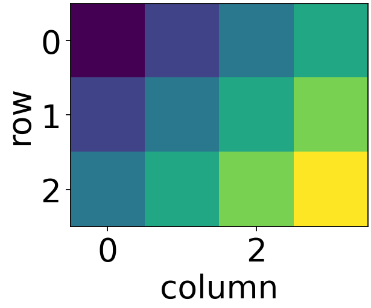
subplots는 fig(전체 그림)·ax(그리기 영역)를 만든다. figsize=(6,3)은 가로·세로 인치, set은 축 이름이다.
extent = [-0.5, 3.5, -0.5, 2.5]
fig, ax = plt.subplots(figsize=(6, 3))
im = ax.imshow(Z, origin='lower',
extent=extent, interpolation='nearest')
ax.set(xlabel='x (m)', ylabel='y (m)')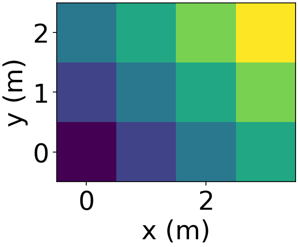
extent는 [왼쪽,오른쪽,아래,위]다. 중심에서 반 칸씩 넓힌 경계이며 이 격자는 기본 경계와 수치가 같다.
nearest는 칸을 섞지 않는다. 기본 viridis 색은 20°C가 어둡고 30°C가 밝다. 표시를 바꿔도 Z는 그대로다.
온도 구간과 기준 경계의 결합
같은 온도의 위치를 잇는 선이 등고선이다. contour는 선, contourf는 선 사이의 온도 구간을 표시한다.
Z (°C) = [[20,22,24,26], [22,24,26,28], [24,26,28,30]] · x=[0,1,2,3]m · y=[0,1,2]m
fig, ax = plt.subplots(figsize=(7, 4))
cf = ax.contourf(X, Y, Z,
levels=[20, 24, 28, 32], cmap='viridis')
cs = ax.contour(X, Y, Z,
levels=[26], colors='black')
ax.clabel(cs, fmt='%d', fontsize=24)
fig.colorbar(cf, ax=ax, label='T (°C)')
ax.set(xlabel='x (m)', ylabel='y (m)')X·Y는 각 Z 칸의 x·y 좌표다. levels의 20·24·28·32는 세 색 구간의 경계, 26은 선 하나의 값이다. cmap은 색상표다.
cs는 선 집합, cf는 채운 구간이다. clabel(cs)는 선에 값을 쓰고 fmt="%d"는 정수, fontsize=24는 글자 크기다.
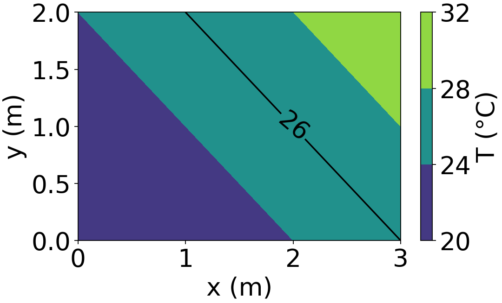
cf의 색 정보를 colorbar가 읽어 수치 눈금을 만든다. ax=ax는 옆 공간을 나눌 Axes, label은 단위 설명이다.
(3,0)·(2,1)·(1,2)의 관측값은 모두 26°C다. 그 사이의 선은 주변 값으로 추정한 보간 결과이며 새 관측이 아니다.
히스토그램의 개수와 확률밀도
온도 분포 단계: 위치 대신 온도 12개의 개수를 센다. 입력 [20,22,24,26,22,24,26,28,24,26,28,30]을 [20,24,32]로 나눈다.
values = Z.ravel()
figN, axN = plt.subplots(figsize=(6, 3))
counts, edges, bars = axN.hist(values, bins=[20,24,32])
axN.set(xlabel='T (°C)', ylabel='Count')
print(counts)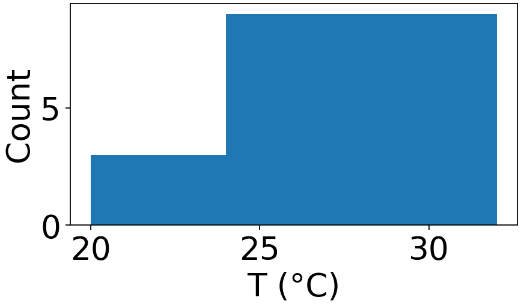
ravel은 Z를 행 순서로 펼쳐 12개를 유지한다. hist는 개수·경계·막대를 반환한다. 24는 둘째 구간, 마지막 32도 포함한다.
figD, axD = plt.subplots(figsize=(6, 3))
density, edges, bars = axD.hist(values,
bins=[20,24,32], density=True)
axD.set(xlabel='T (°C)', ylabel='Density (1/°C)')
print(density)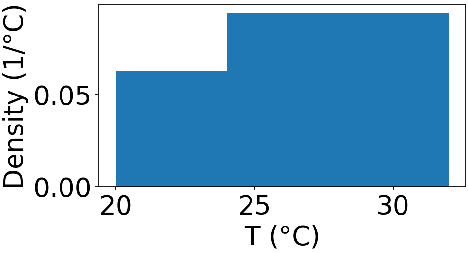
높이: 3÷(12×4)=0.0625, 9÷(12×8)=0.09375. 면적: 0.0625×4=0.25, 0.09375×8=0.75.
개수 합은 12, 확률밀도의 면적 합은 1이다. 온도 색 지도는 물리량 표시이므로 합이 1일 필요가 없다.
2차원 집계 배열과 그림의 방향
위치·온도별 집계 단계: 온도 분포에서 사라진 x 위치를 함께 묶는다. 한 입력 쌍은 관측 한 칸의 x(m)와 온도(°C)다.
px = [0, 1, 2, 3, 0, 1, 2, 3, 0, 1, 2, 3]
temperatures = Z.ravel()
fig, ax = plt.subplots(figsize=(7, 4))
H, xe, te, mesh = ax.hist2d(px, temperatures,
bins=[[-0.5, 1.5, 3.5], [20, 24, 32]])
fig.colorbar(mesh, ax=ax, label='Count')
ax.set(xlabel='x (m)', ylabel='T (°C)')
print(H)입력 온도 [20,22,24,26,22,24,26,28,24,26,28,30]을 px와 같은 인덱스로 짝짓는다. bins=[x경계, 온도경계]의 경계값 3개가 구간 2개씩을 만든다. H는 구간별 개수, xe·te는 경계 배열, mesh는 색 객체다.
| H (개수) | T∈[20,24) | T∈[24,32] |
|---|---|---|
| x∈[−0.5,1.5) | H[0,0]=3 | H[0,1]=3 |
| x∈[1.5,3.5] | H[1,0]=0 | H[1,1]=6 |
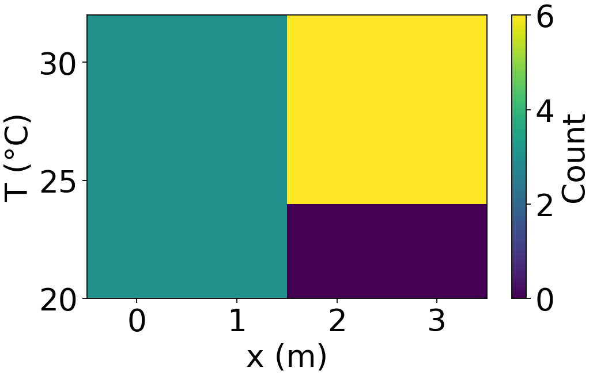
[a,b)는 a 포함·b 미포함이고, 마지막 구간 [a,b]만 b도 포함한다. 24°C 관측 3개는 [24,32]에 속한다. H의 행은 x구간, 열은 온도구간이다. H[0,1]=3은 첫 x구간·둘째 온도구간이므로 그림의 위 왼쪽 칸이다. 출력 [[3.,3.],[0.,6.]]의 합은 12다.
색 지도는 이미 있는 온도를 표시하고 hist2d는 관측을 세어 새 개수를 만든다. 이 그림의 세로축은 y(m)가 아닌 온도(°C)다.
범례의 대상 이름과 위치
대상 구별 단계: y=0·y=2 행을 비교한다. 이름이 없으면 어느 행인지 알 수 없어 label과 legend로 연결한다.
x=[0,1,2,3]m · Z[0]=[20,22,24,26]°C (y=0m) · Z[2]=[24,26,28,30]°C (y=2m)
fig, ax = plt.subplots(figsize=(7, 4))
ax.plot(x, Z[0], '-o', label='y=0 m')
ax.plot(x, Z[2], '--s', label='y=2 m')
ax.set(xlabel='x (m)', ylabel='T (°C)')
ax.legend()기본 legend()는 label을 모으고 겹침이 적은 위치를 고른다. 이 입력에서는 기본도 읽힌다. 아래 지정은 여러 그림에서 범례 위치를 통일하려는 선택이다.
ax.legend(loc='upper left', ncol=2,
frameon=True)loc은 위치, ncol=2는 두 항목을 한 줄에 놓는 열 수다. frameon은 테두리 표시다. 일반 범례를 다시 부르면 기존 것을 교체한다.
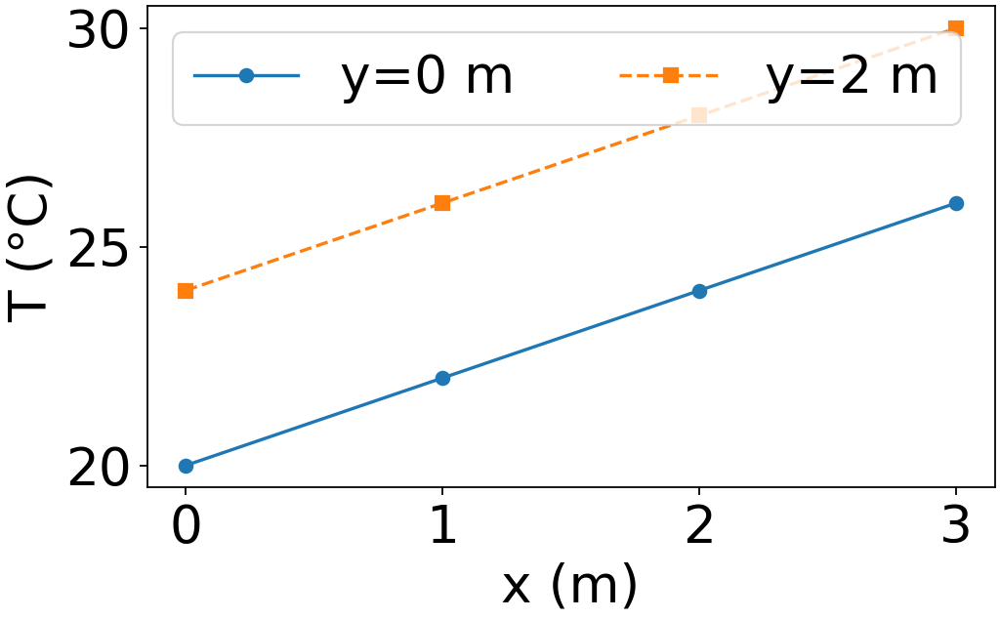
입력 두 행은 [20,22,24,26]과 [24,26,28,30]이다. 각 x에서 y=2 행이 4°C 높다.
범례는 대상의 이름을, 컬러바는 색의 수치를 설명한다. 기본 범례가 충분히 읽히면 수동 지정은 선택 사항이다.
값을 색으로 옮기는 기준과 컬러바
색의 수치 해석 단계: 색만 있으면 24°C인지 알 수 없다. 색 범위와 색상표를 가진 이미지 im에 컬러바를 연결한다.
Z (°C) = [[20,22,24,26], [22,24,26,28], [24,26,28,30]] · x=[0,1,2,3]m · y=[0,1,2]m
fig, ax = plt.subplots(figsize=(7, 4))
im = ax.imshow(Z, origin='lower', extent=extent,
interpolation='nearest', cmap='viridis',
vmin=20, vmax=30)
cb = fig.colorbar(im, ax=ax, label='T (°C)')
ax.set(xlabel='x (m)', ylabel='y (m)')
print(im.get_clim(), cb.mappable is im)extent=[−0.5,3.5,−0.5,2.5]는 공간 경계다. im은 Z·색상표·범위를 가진 이미지 객체다. colorbar(im)이 그 정보를 읽으므로 그림과 눈금이 일치한다.
get_clim은 범위를 읽고, cb.mappable is im은 같은 객체 연결인지 검사한다. 출력: (20.0, 30.0) True.
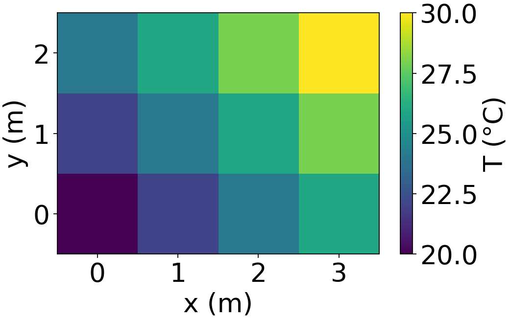
이 선형 범위에서 24°C는 (24−20)÷(30−20)=0.4, 즉 색상표의 40% 위치다. 이 변환을 값의 정규화라고 한다.
같은 색상표라도 색 범위가 다르면 같은 색이 다른 수치를 뜻한다.
서로 다른 자동 색 범위의 비교
A=Z와 B=Z+2를 비교한다. 자동 색 범위는 2°C 차이가 있어도 같은 색 패턴을 만든다.
Z (°C) = [[20,22,24,26], [22,24,26,28], [24,26,28,30]] · x=[0,1,2,3]m · y=[0,1,2]m
figA, axA = plt.subplots(figsize=(6, 3))
imA = axA.imshow(Z, origin='lower', extent=extent,
interpolation='nearest', cmap='viridis')
figA.colorbar(imA, ax=axA, label='T (°C)')
axA.set(xlabel='x (m)', ylabel='y (m)')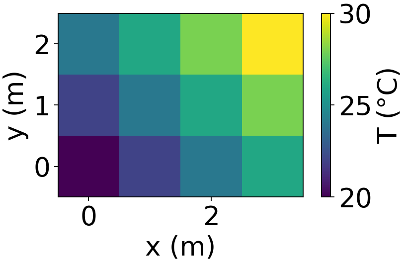
B = Z + 2
figB, axB = plt.subplots(figsize=(6, 3))
imB = axB.imshow(B, origin='lower', extent=extent,
interpolation='nearest', cmap='viridis')
figB.colorbar(imB, ax=axB, label='T (°C)')
axB.set(xlabel='x (m)', ylabel='y (m)')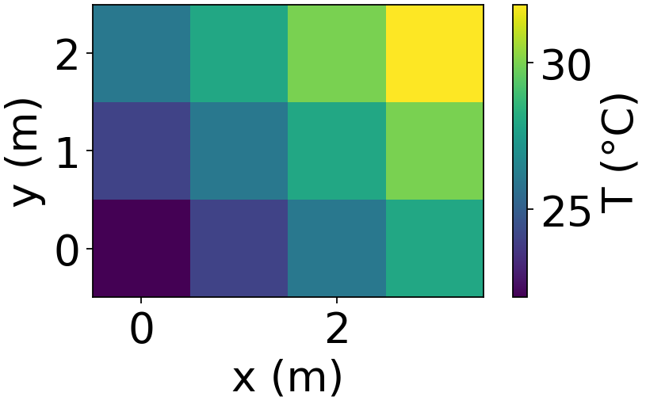
두 그림의 색 패턴은 같지만 B가 모든 위치에서 2°C 높다. 컬러바 눈금 없이 절대 온도를 비교하면 안 된다.
공통 색 범위로의 변경
A=Z, B=Z+2와 viridis를 유지한다. imA·imB는 두 이미지 객체다. 각각 20…30·22…32였던 색 범위를 20…32°C로 통일한다.
Z (°C) = [[20,22,24,26], [22,24,26,28], [24,26,28,30]] · x=[0,1,2,3]m · y=[0,1,2]m
imA.set_clim(20, 32)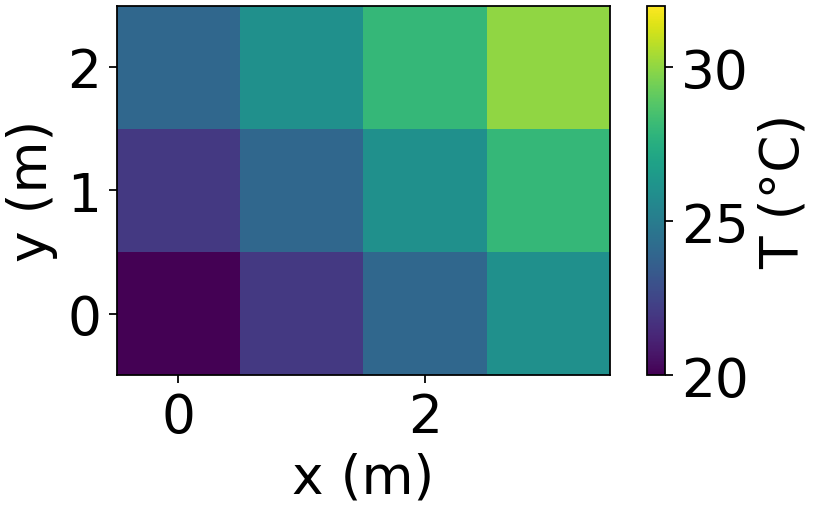
set_clim은 이미지의 색 범위를 바꾼다. 연결된 컬러바도 새 기준으로 갱신된다.
imB.set_clim(20, 32)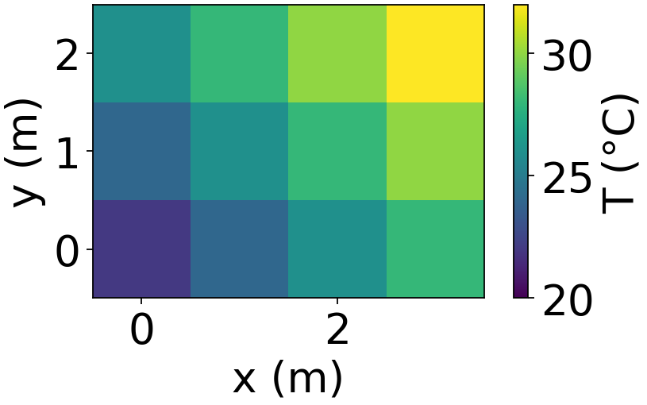
이제 같은 색은 같은 °C를 뜻한다. 같은 위치에서 B의 색이 A보다 높은 쪽으로 이동한다.
같은 색상표·정규화·색 범위가 있어야 같은 색을 같은 값으로 읽는다. 공통 범위는 비교에 유리하지만 좁은 범위의 차이는 덜 드러난다.
기준 온도 대비 차이의 발산형 색상표
기준 대비 차이 단계: 원본 Z에서 예시 기준 24°C를 뺀다. 24°C는 이 설명의 비교 기준이며 안전 기준이 아니다.
Z (°C) = [[20,22,24,26], [22,24,26,28], [24,26,28,30]] · x=[0,1,2,3]m · y=[0,1,2]m
delta = Z - 24
fig, ax = plt.subplots(figsize=(7, 4))
im = ax.imshow(delta, origin='lower', extent=extent,
interpolation='nearest', cmap='RdBu_r',
vmin=-6, vmax=6)
fig.colorbar(im, ax=ax, label='T - 24 (°C)')
ax.set(xlabel='x (m)', ylabel='y (m)')delta는 각 온도에서 기준 24를 뺀 값이다. 20→−4, 24→0, 30→+6이며 Z는 유지된다.
RdBu_r는 낮은 쪽 파랑·가운데 흰색·높은 쪽 빨강이다. 이름의 _r은 RdBu 순서를 뒤집는다. −6…6은 0을 가운데 둔다. 자동 −4…6이면 0은 40% 위치라 가운데 색과 맞지 않는다.
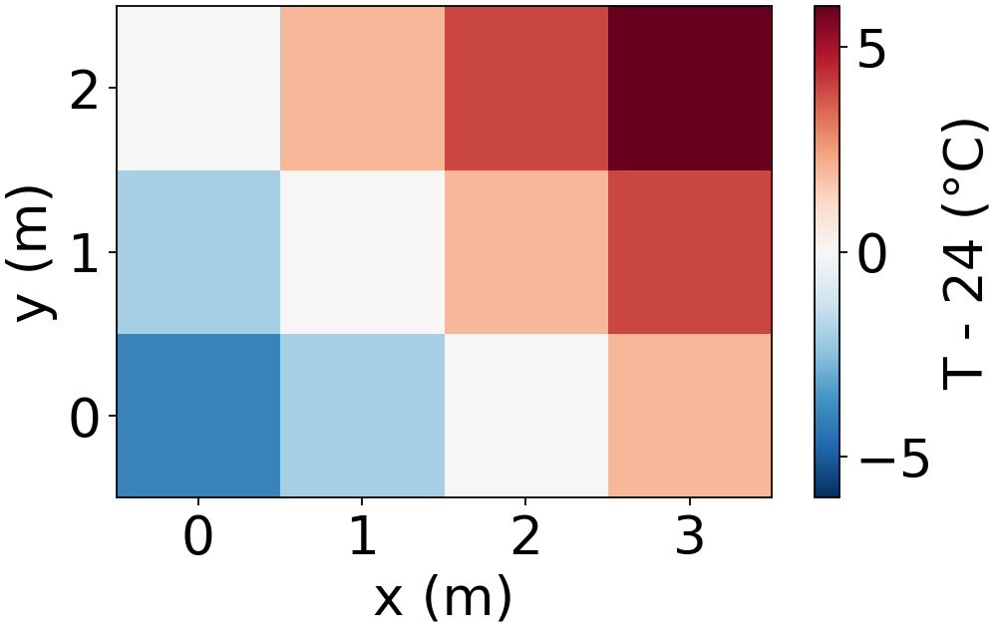
viridis 같은 순차형은 낮음→높음의 크기 비교에, 두 방향으로 갈라지는 발산형은 기준 양쪽의 차이 비교에 쓴다.
0을 의미 있는 기준으로 정했을 때 발산형을 선택한다. 색만 읽지 말고 기준값과 부호를 함께 확인한다.
원본 값의 유지와 색 범위 초과 표시
상한 초과 표시 단계: 원본 Z의 복사본 C에서 (x=3,y=2)만 30→60°C로 바꾼다. 20…30의 색 범위는 유지한다.
Z (°C) = [[20,22,24,26], [22,24,26,28], [24,26,28,30]] · x=[0,1,2,3]m · y=[0,1,2]m
C = Z.copy()
C[2, 3] = 60
fig, ax = plt.subplots(figsize=(7, 4))
im = ax.imshow(C, origin='lower', extent=extent,
interpolation='nearest', cmap='viridis',
vmin=20, vmax=30)
fig.colorbar(im, ax=ax, label='T (°C)', extend='max')
ax.set(xlabel='x (m)', ylabel='y (m)')
print(C.max(), Z.max())copy로 별도 배열을 만든 뒤 C만 바꿨다. 출력 60 30은 C 최댓값과 원본 Z 최댓값이다.
extend="max"는 작성자가 상한 초과를 알리도록 지정하는 삼각형이다. 초과 값을 자동 검출하는 옵션은 아니다.
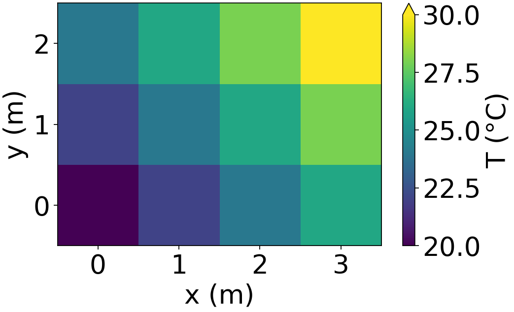
변경 전 Z의 30°C와 변경 후 C의 60°C가 같은 끝 색이므로 색만으로 차이를 복원할 수 없다. 정확한 값은 배열이나 별도 숫자로 확인한다.
색 범위 제한은 데이터 삭제·이상값 판정이 아니다. 원본 Z는 뒤의 subplot 장표에서 그대로 다시 사용한다.
2×2 subplot 배열과 Axes 선택
여러 그림 배치 단계: subplot은 Figure 안에 격자로 배치한 Axes다. subplots(2,2)는 네 Axes를 만들며 먼저 한 칸에 선을 그린다.
x=[0,1,2,3]m · Z[0]=[20,22,24,26]°C (y=0m) · Z[2]=[24,26,28,30]°C (y=2m)
plt.close('all')
fig, axes = plt.subplots(2, 2, figsize=(7, 4),
constrained_layout=True)
axes[0, 0].plot(x, Z[0])
axes[0, 0].set(xlabel='x (m)', ylabel='T (°C)')
print(axes.shape, len(fig.axes))close("all")은 열린 그림을 닫는다. 배열 Z 같은 데이터는 그대로다. axes[0,0]은 위 왼쪽 한 Axes다.
인자 2,2는 행 수·열 수다. 2×2에서는 기본으로 2차원 Axes 배열을 반환한다. constrained_layout은 축 이름과 눈금에 맞춰 여백을 조정한다. len(fig.axes)는 Figure 안의 Axes 개수다.
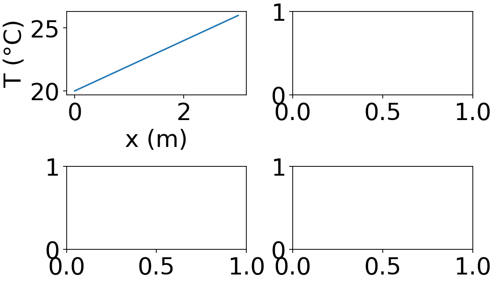
| 인덱스 | 위치 |
|---|---|
| [0,0] · [0,1] | 위 왼쪽 · 위 오른쪽 |
| [1,0] · [1,1] | 아래 왼쪽 · 아래 오른쪽 |
axes는 Axes 객체의 배열이고 Z는 온도 숫자의 배열이다. 같은 [행,열] 문법이어도 선택되는 대상이 다르다.
축 공유와 비교 단위의 일치
같은 온도를 별도 패널로 비교한다. sharex·sharey는 축 범위 등을 연결한다. 2행×1열의 axes는 기본으로 길이 2의 1차원 배열이다.
x=[0,1,2,3]m · Z[0]=[20,22,24,26]°C (y=0m) · Z[2]=[24,26,28,30]°C (y=2m)
fig, axes = plt.subplots(2, 1, figsize=(7, 5),
sharex=True, sharey=True)
axes[0].plot(x, Z[0], '-o')
axes[1].plot(x, Z[2], '--s')
axes[0].set(xlim=(0, 3), ylim=(18, 32),
ylabel='T (°C)')
axes[1].set(xlabel='x (m)', ylabel='T (°C)')
print(axes[1].get_xlim(), axes[1].get_ylim())출력 (0.0, 3.0) (18.0, 32.0). 첫 Axes의 범위가 아래 Axes에도 전달됐다. get_xlim/get_ylim은 적용 범위를 읽는다.
기본 독립 y범위는 19.7…26.3과 23.7…30.3으로 각 선의 높이가 같아 보인다. 공유 뒤 18…32로 고정하면 4°C 차이를 같은 눈금으로 읽는다.
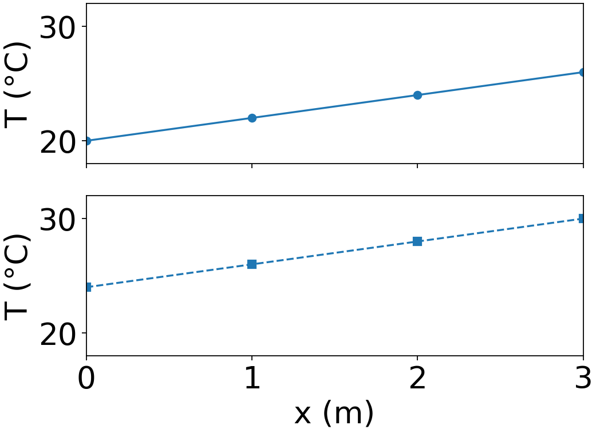
각 Axes에 같은 ylim을 따로 지정해도 비교할 수 있다. sharey는 범위 변경까지 함께 전파하려는 선택이다.
축 공유는 같은 물리량·단위에 적용한다. 위치(m)와 온도(°C), 온도와 개수처럼 의미가 다르면 공유하지 않는다.
Summary
원본 자료·표현 규칙·비교 기준을 추적하면 각 그림에서 근거를 읽을 수 있다.
| 역할 | 기능과 구분 | 확인 근거 |
|---|---|---|
| 위치와 값 | meshgrid, imshow, contour·contourf | 첫 행의 위치와 26°C 경계 |
| 집계 | hist의 개수·확률밀도, hist2d | 1·2차원 집계 합 12, 밀도 면적 합 1 |
| 대상과 수치 | legend는 대상, colorbar는 색의 값 | 행 이름·온도 단위·공통 색 범위 |
| 배치와 비교 | subplots·선택적 축 공유 | axes[행,열]의 Axes 선택, 공유 y범위 18…32°C |
절대값을 비교할 때는 색상표·색 범위를 통일하고, 같은 물리량·단위의 축 기준을 맞춘다. 그림에 없는 원인이나 관측 정밀도를 추정하지 않는다.